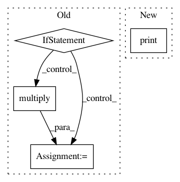

28251c5bf7452fa1185fa6f93b9c34d1196ea16d,pynets/core/thresholding.py,,local_thresholding_prop,#Any#Any#,593
Before Change
conn_matrix_bin = thresholding.binarize(nx.to_numpy_array(min_t, nodelist=sorted(min_t.nodes()), dtype=np.float64))
// Enforce original dimensionality by padding with zeros.
if conn_matrix_bin.shape != conn_matrix.shape:
if conn_matrix.shape[0] > conn_matrix_bin.shape[0]:
result = np.zeros(conn_matrix.shape)
result[:conn_matrix_bin.shape[0], :conn_matrix_bin.shape[1]] = conn_matrix_bin
conn_matrix_thr = np.multiply(conn_matrix, result)
else:
result = np.zeros(conn_matrix_bin.shape)
result[:conn_matrix.shape[0], :conn_matrix.shape[1]] = conn_matrix
conn_matrix_thr = np.multiply(conn_matrix_bin, result)
else:
conn_matrix_thr = np.multiply(conn_matrix, conn_matrix_bin)
return conn_matrix_thr
def perform_thresholding(conn_matrix, thr, min_span_tree, dens_thresh, disp_filt):
After Change
try:
conn_matrix_thr = np.multiply(conn_matrix, conn_matrix_bin)
except ValueError:
print("Dimensionality inconsistent after MST thresholding. Check raw graph output manually for debugging.")
return conn_matrix_thr
In pattern: SUPERPATTERN
Frequency: 3
Non-data size: 4
Instances
Project Name: dPys/PyNets
Commit Name: 28251c5bf7452fa1185fa6f93b9c34d1196ea16d
Time: 2020-06-13
Author: dpisner@utexas.edu
File Name: pynets/core/thresholding.py
Class Name:
Method Name: local_thresholding_prop
Project Name: NeuromorphicProcessorProject/snn_toolbox
Commit Name: 87ff637109458f019eb574c798fcf28fc244f735
Time: 2017-04-10
Author: bodo.rueckauer@gmail.com
File Name: snntoolbox/model_libs/lasagne_input_lib.py
Class Name:
Method Name: evaluate
Project Name: NeuromorphicProcessorProject/snn_toolbox
Commit Name: 87ff637109458f019eb574c798fcf28fc244f735
Time: 2017-04-10
Author: bodo.rueckauer@gmail.com
File Name: snntoolbox/model_libs/keras_input_lib.py
Class Name:
Method Name: evaluate